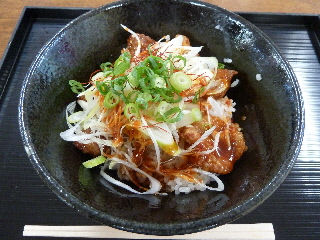
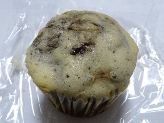
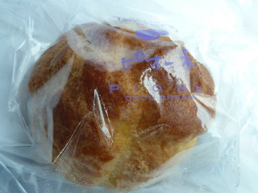

麺やオロチでオロチ丼を食べました。
2013/08/04
舞乃市の中にあるラーメン屋さん「麺やオロチ」で食事をしました。

甘いタレに漬かったから揚げのドンブリに、キムチのタレがかかった感じです。
甘さと辛さ一つになっていますね。
から揚げが美味しかったので、から揚げをもっと食べたいって思いました。
島根県江津市後地町3348‐113
2013/08/04
舞乃市の中にあるラーメン屋さん「麺やオロチ」で食事をしました。

甘いタレに漬かったから揚げのドンブリに、キムチのタレがかかった感じです。
甘さと辛さ一つになっていますね。
から揚げが美味しかったので、から揚げをもっと食べたいって思いました。
2011/07/24
蒸しパンのようですが、コーヒーゼリーが入ったパンです。

ゼリーが入っていますが、そんなに水分が多くなく食べやすかったです。
小さいゼリーがいっぱい入っているんですが、ちゃんとコーヒーゼリーの味がしました。ゼリー入りのパンなんてできるんですね。ちょっと感心しました。
2011/07/24
江津のドライブステーション舞乃市で、ピオーネシュークリームを食べました。

冷凍シュームリームなので解凍して食べたほうがきっと美味しいんでしょうけど、今日は暑かったのでそのままいただきました。
冷凍な分、甘さが控え目に感じられ、冷たくて爽やかなアイスクリームな感じがしました。
金城町の洋菓子工房トルティーノってところの商品のようです。